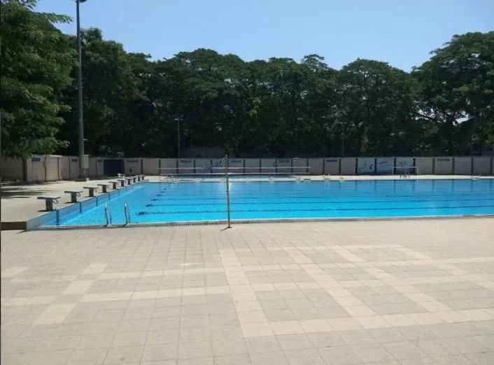
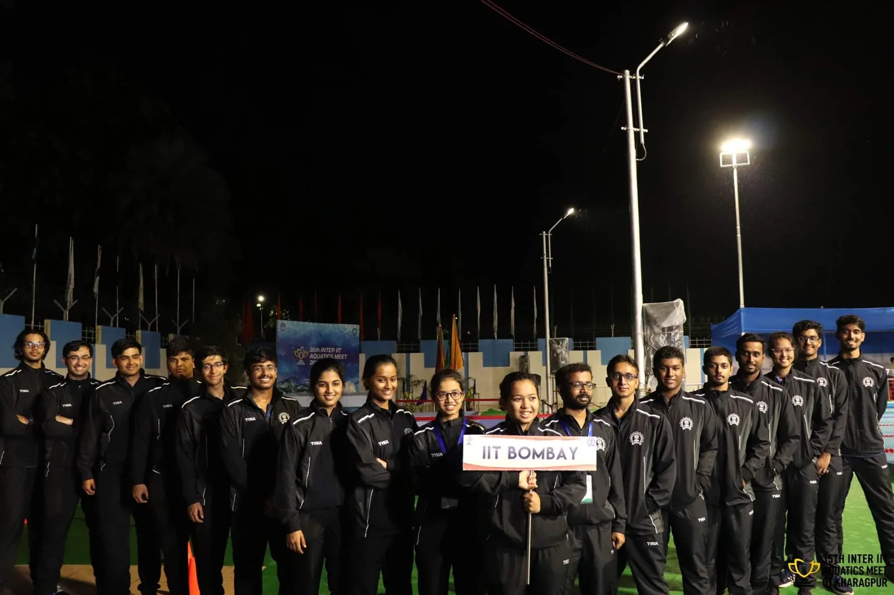
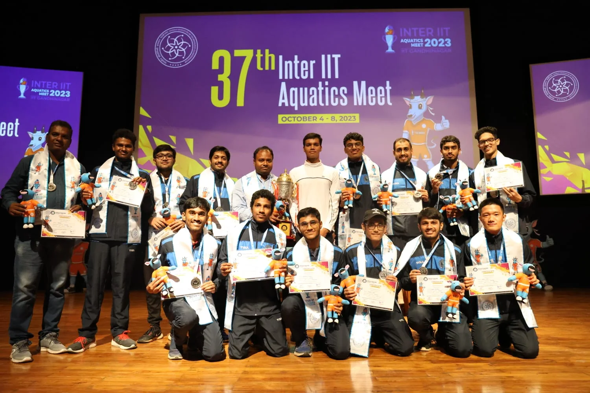

Slot Authority
Gymkhana/Coach can use any slot for student camps, inter-hostel meets, Inter IIT camps, or any program approved by Chairman (Sports)/Dean (SA).
Swimming and water polo bring a different rhythm to campus sport. Get to know the pool, membership information, published rules and ways to take part before you arrive.
Find your starting pointRead the pool’s published guidance, including membership, safety, guests and hygiene.
All five categories below preserve the institutional guidance captured in October 2026 and checked against the published page on 24 October 2026. Ask the pool office to confirm current procedures, slots and fees. Institutional source ↗
Gymkhana/Coach can use any slot for student camps, inter-hostel meets, Inter IIT camps, or any program approved by Chairman (Sports)/Dean (SA).
Slots are strictly enforced during summer. At other times, if fewer than 30 swimmers are in the big pool, ladies slots may be shared.
The pool is located just opposite Hostel 2, beside the Indoor SAC.
A membership card is a must for swimming at the pool.
Swimming is prohibited without a membership card.
The membership card is not transferable — violating this cancels membership.
Make an entry in the register and keep your card in the glass board.
No male member is permitted during the ladies slot; female members may use general slots any time.
Members shouldn't move around the pool deck or distract lifeguards during pool hours.
All viewers should remain in the gallery only.
No member may use a separate lane during general slots.
Student Gymkhana/coach can use any slot for camps, inter-hostel meets, or committee-approved activity.
Swimming is strictly prohibited in the absence of a lifeguard.
Swimming or diving cannot be done alone.
Beginners stay at the shallow end and wear a red cap. Under-12s must be accompanied by a parent.
Diving only in the presence of a coach or lifeguard, with the diving area clear of swimmers.
Drinking, smoking and eating is prohibited in the pool and the paved area around it.
Never push anyone into the pool — horseplay isn't permitted, and never swim beyond your capacity.
Photography in the pool premises needs prior permission.
Never swim with metallic objects like rings, watches, or neck chains.
The club/gymkhana isn't responsible for lost belongings — don't bring valuables.
Lifeguards can't teach or train members during general slots — approaching them to do so risks accidents.
Violating any of these rules cancels your membership.
Guest charges are Rs 20/- per dip, for Institute Staff only.
No guests during peak hours once 30 or more members are in the pool.
A guest cannot be a regular visitor to the pool.
Only the primary member may bring a guest — dependents/school children cannot.
Guests are allowed once or twice a week.
Fill the guest form each time, and log entry in both the guest book and the main entry book.
The guest must always be accompanied by the primary member.
Costumes are mandatory — non-transparent and not white in colour.
Anyone with long hair must wear a cap, tied securely before entering.
No entry with open cuts, wounds, eye infections, or communicable disease.
Anyone under the influence of alcohol, drugs, or other intoxicants can't enter the pool premises.
Leave possessions and footwear in the cloak room — the club isn't responsible for losses.
Shower and rinse thoroughly before entering; use soap to remove oils from hair or skin.
Use the scum gutter for spitting or blowing — keep the pool clean and respect other users.
Spaces, equipment and practice.
Get to know what the sport offers.

Facility descriptions are from the institute’s October 2026 archive. Confirm current access, hours, equipment and coaching arrangements with the sports office.
Camps, institute competitions and ways to take part. Explore the activities described by the sports community.
These are archived activity descriptions, not upcoming fixtures. Ask the team about current dates, entry and eligibility.
Every summer, by popular demand, our coach, Ritesh Guchhait, holds camps in swimming at the beginners, intermediate and advanced levels. Camps are also held for IIT students during the semester.The beginners camps are held separately for children, ladies, students and staff. The duration is normally 15-20 days, and there is a demonstration for parents and families on the last day, when certificates are handed out. There are also intermediate camps for students looking to train in strokes such as breaststroke, butterfly and backstroke.
The Government of India, through its National Sports Organization, provides a scheme in all IITs, where all incoming, i.e. first year students, must sign up for a particular sport, and undergo training. This scheme, popularly called NSO, is available to IIT students for training in various sports, such as swimming, hockey, basketball, squash, badminton, tennis, athletics, table tennis, football etc. Swimming, is a much sought after option, and since the number of students that can be accommodated in a given sport is limited, it is not surprising to see students, at the beginning of every academic year, crowding around the coach at the poolside, to give their trials and try to get in. What is extremely encouraging, is that students often develop a new interest in swimming, and continue to attend advanced coaching throughout the year, all through their college life, and not just the first year. The NSO swim training functions two evenings a week.
Swimathon is the largest Event organised by IIT Bombay Swimming Club and is held annually during the end of Spring season. Swimathon started in 1989 and has a duration of 6 hours. Its open to everyone on campus, and one can see hoards of IIT students participating quite happily along with kids, professors and middle-aged ladies. Over the years, Swimathon has grown exponentially and now attracts 100+ participants every year.
Every year we have an Inter hostel swimming competition - The Swimming General Championship, with assorted supporters crying themselves hoarse in support of their hostel mates, irrespective of the level of swimming. It's an ideal platform to flaunt your swimming skills and make your hostel proud! With no restrictions on participation, the swimming pool is the place to be during the days of the swimming GC.
The IIT Swimming club holds triathlon competition every year. This tri sport of event includes swimming, cycling, and running. The event is organized in two categories: Team Triathlon- Team of 3 (at least one female member) & Individual Triathlon.
Every year we have an inter hostel water polo general championship where all the hostels battle to prove their supremacy in the sport. The GC is organized according to the rules of FINA.
Historical results from the institute’s published source, preserved with their original years.
Mens Swimming 2nd place
Mens Water Polo 4th place
Best Swimmer Award Kaushal Khutneta
200m Breastroke(M) Gold Kushal Khunteta
100m Breastroke(M) Gold Kushal Khunteta
50m Breastroke(M) Silver Kushal Khunteta
100m Butterfly(M) Gold Vaishnav Rao
50m Butterfly(M) Silver Vaishnav Rao
200m Medley (M) Silver Vaishnav Rao
100m Freestyle(W) Gold Mansi Khedekar
Mens Water Polo : 2nd place Top Scorer (Mens Water Polo) : Suyash Bhandare
100m Freestyle(M) Bronze Suyash Bhandare
200m Breastroke(M) Silver Kartik Akappa
200m Freestyle(M) 4th place Suyash Bhandare
 Swimming pool
Swimming poolAsk about getting started, current training, access or the right route into a team.
Contacts below are from the institutional snapshot of 18 October 2026. Confirm the current office-holder before reaching out.
Coach, sports officer

Aquatics, on campus.
Photographs from the archive.

Another way to play
Athletics ↗